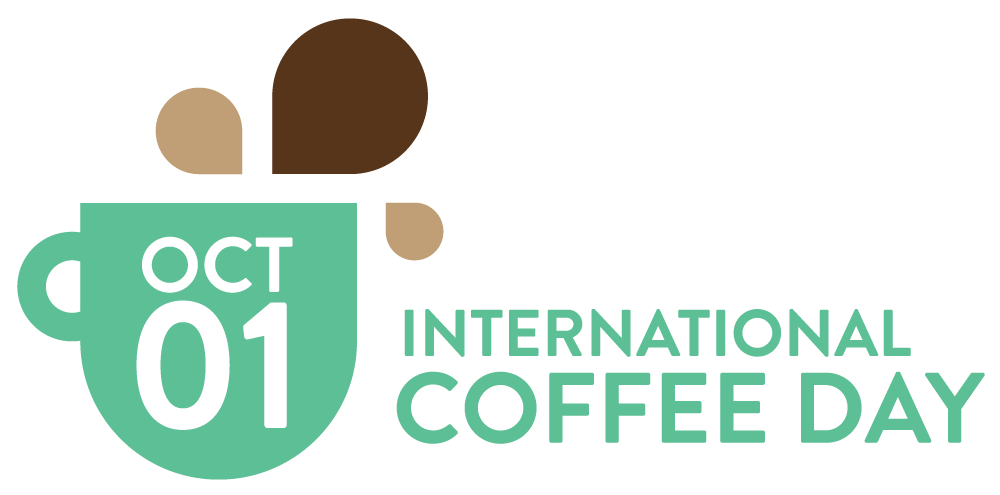
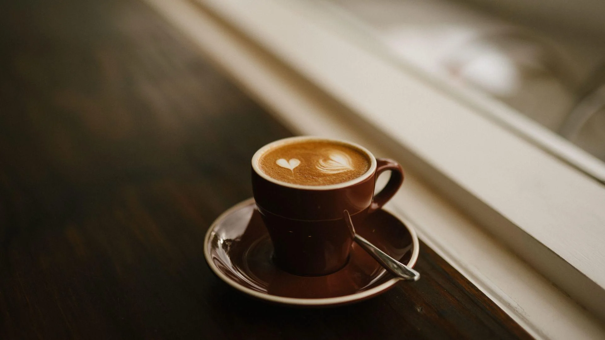
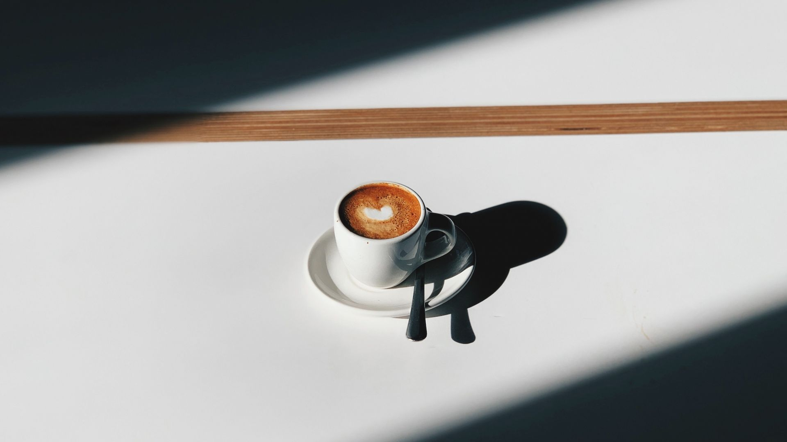

>
<
5 tips on how to celebrate International Coffee Day
Here’s what you can do to Celebrate International Coffee Day:
- Try a new flavour and a new way of making your usual cup of coffee.
- Treat yourself to a splendid coffee maker or machine.
- Read up about coffee, the history of coffee and what type of coffee people are drinking across the globe makes for interesting reading.
- Many of us collect cookery books – but how many of us have books about coffee? Browse through the shelves at your local book shop to find some firm favourites.
- A coffee cupping is the equivalent of wine tasting – only with coffee. As the trend takes hold, more and more top-notch coffee shops and baristas are offering coffee cuppings for consumers to try out new flavours